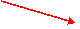
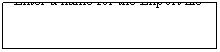
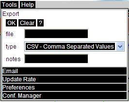

Export
The Export tool as shown in the figure below, allows users to export the currently displayed view or query to a HTML compact file. If the correlated data is available, it can be exported as both CSV and XML files as required.

Figure 7-3 Export Tool
Enter a name for the file to be exported. Select a file format from the drop down list. Enter any notes if desired. Click OK to export the file, click Clear to clear out entered/selected information.